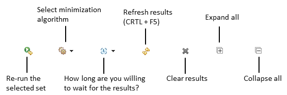

Using GZoltar as an Eclipse Plugin
There is an experimental Eclipse plugin available using the following update site: web/eclipse-plugin.Quick reference manual (under construction)
By clicking on Refresh (CTRL-F5), you can run all tests in a project. If this has already been done, you can select a (recently computed) set of tests and click on Re-Run to execute its tests again.

With the graphical interface you can visualize the potential faulty elements (project, packages, source files, classes, methods, and lines). These visualizations give an excellent overview of the projects' structure. You can choose the visualization by clicking on one of the three top right buttons (Sunburst, Vertical Partition and Bubble Hierarchy).
The colors represent the elements' likelihood. The green color means that the element has 0% probability of being faulty, whereas the yellow color means that the element has medium failure probability. The red color means that the element has high failure probability, thus the developer should inspect these elements first in his quest for finding the root cause of observed failures.
If you double click in an element, it zoomed in and after that if you click with the right button, you go to the initial state. Or simply use your mouse wheel to zoom in or out. You can click and drag the visualization too.
If you hover the mouse in an element, it shows its likelihood value.
For more information, see publication Using HTML5 Visualizations in Software Fault Localization.
Known limitations:
- The plugin diagnoses all opened projects on Eclipse. If you only want to diagnose a single project, all projects but that one must be closed.
Requirements
- Java: 8.
- Windows 32 or 64 bits: Java 32 bits, Eclipse 32 bits, Apple Safari (as GZoltar's views require WebKit. Safari for Windows can be found here).
- Linux: libwebkitgtk package.
- Eclipse: Luna, and Mars.